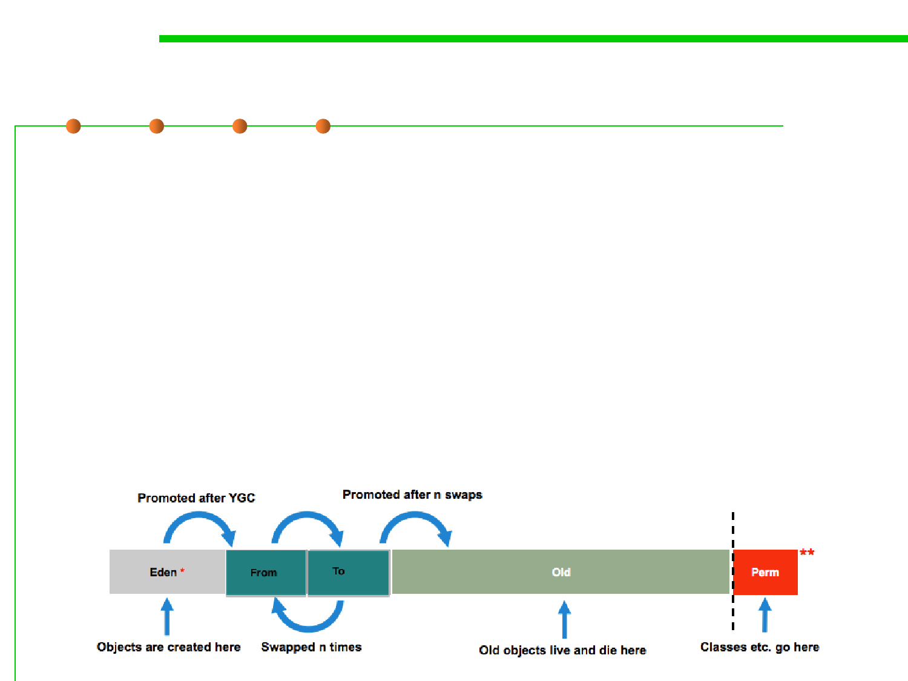

8.1 Metrics, Principles, and Methods of Construction for Performance
Garbage Collection in JVM
▪ The HotSpot VM (Sun JVM) has three major spaces: young
generation, old generation, and permanent/metaspace generation.
– When a Java application allocates Java objects, those objects are allocated
in the young generation space. 新对象分配到young generation中
– Objects that survive, that is, those that remain live, after some number of
minor garbage collections are promoted into the old generation space. GC
后仍然存活的对象，提升到old generation中
– The permanent generation space holds VM and Java class metadata as
well as interned Strings and class static variables PermGen/Metaspace中
保存VM和class的元数据，以及类的静态变量
metaspace